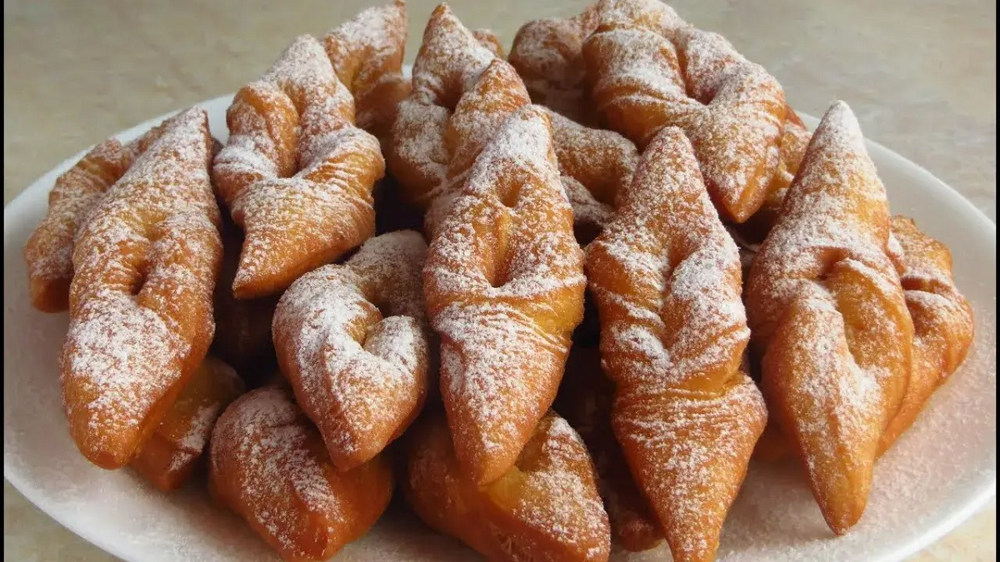

Silly fact about Žagarėliai!
Žagarėliai are sometimes called "Auselės" or "Ausytės", which both mean "ears", and from can be recalled, it's possibly due to how they're made; they're flipped inside out through the middle, using your thumb generally, and traditionally, when kids were punished they would generally be dragged by the ear. This pinching of the ear, resembles how this dessert is made which is why it's called that way.

-
List of ingredients
- ~180g of all-purpose flour
- 3 large egg's yolks
- 3 spoons of sour cream
- 3 spoons of granulated white sugar
- oil
- powdered sugar
-
Preparation
-
Batter preparation
- Take the eggs and seperate the yolk from the white; then in a bowl, take the yolk and mix it with the sugar, sour cream, and flour.
- Mix the batter well and get a clean flat surface ready; then sprinkle just enough flour onto the surface so that the batter becomes non-sticky, but is yet still elastc and soft.
- NOTE: do not use too much flour and make the batter hard, or else the pastry will become hard when cooked.
- Next, get a roller and roll the dough out well until the dough is fairly thin. Then fold it over and roll it some more.
- Once the doough has been thoroughly rolled out, flatten it and cut it into rhombuses. Then take each rhumbus and make a slit down their centers, diagonally (from corner to corner).
- Then, take each piece and take one of the corners and push it through the slit in the center.
-
-
Cooking
- In a pot, or a deep pan, pour a lot of cooking oil and heat to a high temperature so that the pastries can fry.
- Put each piece into the oil, small batches at a time to prevent clumping. Fry until each piece begins to float at the top and looks golden brown.
- When you take each piece out, place them on a paper towel and allow the excessive oil to seep off and soak into the towels. Then take each piece, sprinkle some powdered sugar on top, and serve!
-
Cultural Importance
These delectable treats may not have much to show for cultural importance, however, there is an underlying nostalgia of "grandma's childhood cookies" that comes with it. This cozy feeling has its own importance, uniting families through tasty treats!